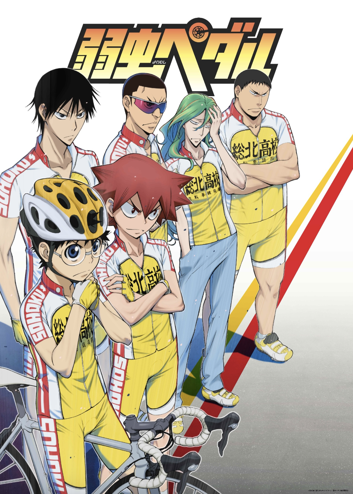

| 
|
弱虫ペダル
Yowamushi Pedal
Otaku boy turns out to be really good
at cycling because he cycles dozens of miles to
get to Akihabara to save money on travel and spend
it on his nerdy hobbies. Wholesome sports anime,
good characters, good plots, feel-good, really
really gross side character that I hate but you
can skip those parts (although he does show up a
lot). Very satisfying to watch, lots of humor.
Binge-worthy.
|
|
|
ペンギンハイウェイ
Penguin Highway
Super serious little boy researches why
penguins keep on mysteriously appearing in his town.
Beautiful animation, questionable actions by the
beautiful lady, handsome father, very anime-esque
plot. Movie length!
|
|
|
ソーダのように言葉が湧き上がる
Words Bubble Up Like Soda Pop
Super cute movie about a social media
influencer who is insecure about her bunny teeth
and a super shy boy who writes haiku. They look
for a record together and stuff. I'm sure more
happens in the movie but I lowkey forgot because
I only watched it once. The animation colors are
super vibrant and refreshing.
|
|
|
Free!
Hot men. Good youth. What a lovely time.
TBH I don’t remember the plot. I assume they swim.
I remember it was great. I rewatched it like twice.
|

|
古見さんは、コミュ症です。
Komi Can't Communicate
Komi has a hard time speaking to other
people because of her social anxiety/communication
disorder, but she has a goal to make 100 friends.
She slowly accomplishes this goal by befriending
very quirky people at her school. Very wholesome,
very humorous - the anime takes the lighthearted
route rather than a serious one.
|

|
Orange
I remember really liking this anime but
it wasn’t memorable enough for me to remember.
I think someone dies.
Oh yeah I just looked up the plot and it’s the one
where they get letters from themselves in the future
asking them to save their friend from suicide.
Very classic anime plot, it was enjoyable.
|

|
かぐや様は告らせたい ～天才たちの恋愛頭脳戦～
Love is War
note: I
Two elite students like each other but will
rather literally die than confess their love because
the person who confesses first is always inferior in
a relationship. Super good anime, I have to finish
watching it. I think that there is a second season now.
|
|
|
賭ケグルイ
Kakegurui
Black haired heroine transfers into gambling school and is super good at gambling so she stirs things up at the school. Lots of gambling, lots of erotic references and drool, pretty good anime. I enjoyed it. I think there is a season 2 but I haven't seen it.
|
|
|
天気の子
Weathering With You
Girl can control the weather, they fall in
love. Good movie.
|
|
|
デスノート
Death Note
Super smart dude somehow gets a notebook
that kills anyone whose names are written down in
it. Another super smart dude tries to catch him.
It was a pretty good plot but I don’t think I would
rewatch.
|

|
ゴールデンタイム
Golden Time
Guy gets amnesia at end of high school and
goes to college with no memories. Meets new friends,
makes a girlfriend, but memories fleet back sometimes
- but new and old self can’t coexist, and he realizes
that his new self will soon be erased. A little lacking
in humor for my taste, it’s a pretty serious story.
|

|
斉木楠雄のΨ難
The Disastrous Life of Saiki K.
Saiki navigates his life with his supernatural
and quite frankly unfairly strong powers surrounded
by idiots. No overarching storyline, just individual
episodes, so very low commitment. Filled with dry
sarcasm from Saiki. Pretty funny. Subtitles kind of suck.
|

|
坂本ですが？
Haven't You Heard? I'm Sakamoto
Same type of show as Saiki K. Pretty good
for a background show. It’s just Sakamoto being cool af.
|

|
黒子のバスケ
Kuroko's Basketball
The main character is a good basketball
player because he is so unremarkable that players
don’t see him on the court. He is on a mission to
beat all of his former teammates, who are all god-level.
The plot is repetitive but it’s a solid show. Muscular arms.
|

|
ようこそ実力至上主義の教室へ
Classroom of the Elite
Super smart students are divided into classes
from A to D, and these classes are ranked based on the
class’s whole performance. The main dude is smart af
and was bred in some sort of facility or something but
he always lays low and makes sure to perform the average.
He helps his class perform well in various tests but
never takes the credit. But he seems to have an ulterior
motive.
|

|
君の膵臓をたべたい
I Want to Eat Your Pancreas
Girl with terminal illness befriends an antisocial
guy and does things on her bucket list with him.
Pretty good movie I guess but there’s like zero comedy
so make sure you’re in a serious mood
|
|
|
恋は雨上がりのように
After the Rain
High school girl is in love with her boss, who is 45.
Kinda wholesome I guess? But it had more comedy potential
that wasn’t fulfilled, also kinda weird how the boss isn’t
an adult enough to completely deny her fantasies. Maybe
it's a social commentary.
|

|
天空侵犯
High-Rise Invasion
Pretty solid plot but it’s kind of scary to
watch by yourself haha lots of gore tbh. Oh yeah it’s
the netflix show where the people are dropped off on
the roofs of buildings or whatever and then they have
to run away from the masked people, who are trying to
murder them all.
|

|
約束のネバーランド
The Promised Neverland
Kids in orphanage are actually fed to monsters.
The orphans find this out so they try to escape. Pretty
good anime, pretty gory, wouldn’t rewatch but would
watch season 2
Ok jk I got info that season 2 is not interesting
|
|
|
Erased
Boy rescues girl from abusive home situation
and an unexpected person is the antagonist. TBH don’t
remember the plot too well but it was pretty good
|
|
|
Banana Fish
Japanese photographer boy gets caught up in
American gang violence.
Good plot i guess… did not like the ending.
|